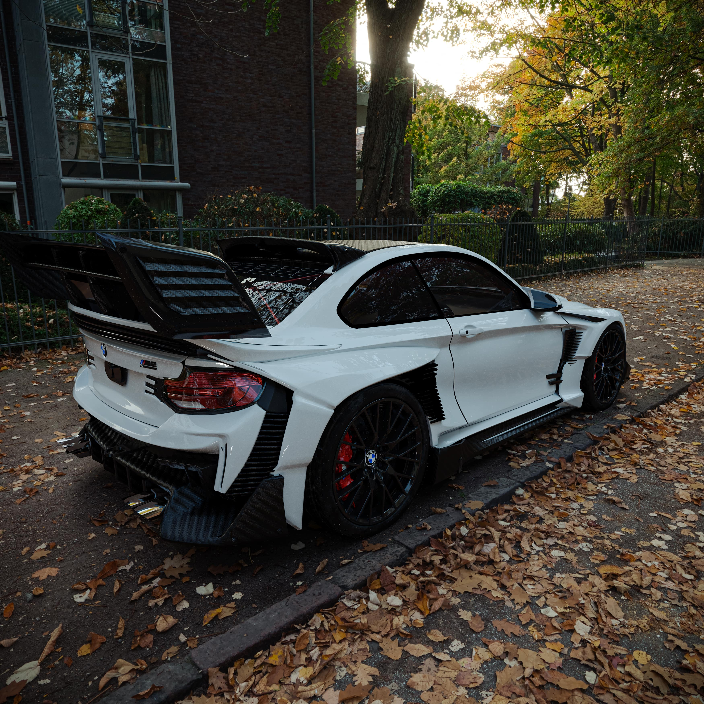
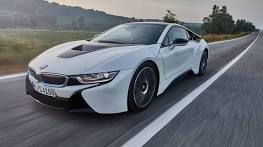

Najbolje ponude i destinacije

PO SJAJNOJ CIJENI OD 90 000€
Oznaka "Shark" se u vezi sa BMW M2 modelom najčešće odnosi na specifičan koncept dizajna, popularne dodatke za karoseriju ili istorijsku inspiraciju koja se krije iza njegovih linija.

PO SJAJNOJ CIJENI OD 85 000€
BMW i8 je revolucionarni plug-in hibridni sportski automobil (kupe i roudster) koji je proizvodio BMW od 2014. do 2020. godine, poznat po svom futurističkom dizajnu, vratima koja se otvaraju nagore i kombinaciji 1.5-litarskog turbo benzinca i elektromotora.